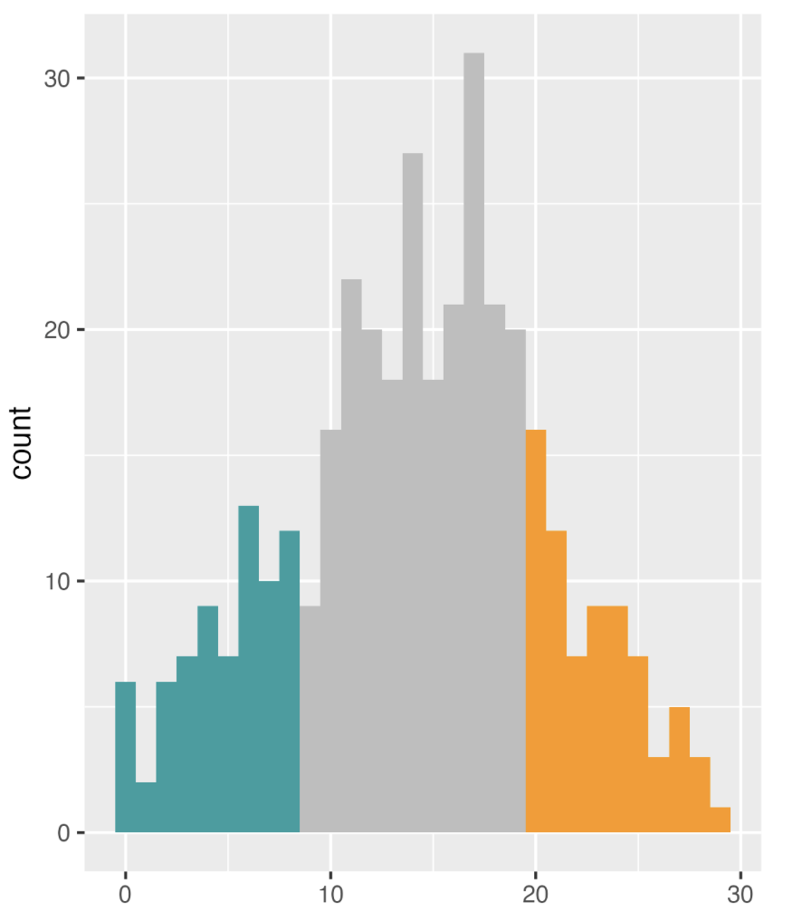

2023
Muslim diversity
MDS
Panel data
Longitudinal
Islamophobia
Terrorism
Far-right extermism
Prejudice
Muslims
NZAVS
Warmth
Feeling thermometer
New Zealand
Qualitative
What does MDS want to achieve and how is it connected to my other projects?
No matching items
2021
Controlling unwanted memories: A multisite registered replication of the Think/No-Think effect
Cognitive Psychology
Memory suppression
Memory suppression
Think/No-think
T/NT
OCD
PTSD
Suppression-induced forgetting
What is T/NT and why this project?

No matching items
2019
Micronutrients and Mental Health Post-Christchurch Shootings
Disasters
Psychological injuries
Micronutrients
Terrorism
Mass shooting
Earthquake
Flood
Muslims
New Zealand
Have micronutrients helped Muslim community?
Research on Islamophobia with NZAVS
Causal inference
Counterfactual
Panel data
Longitudinal
Islamophobia
Terrorism
Far-right extermism
Prejudice
Muslims
NZAVS
Warmth
Feeling thermometer
New Zealand
What we found in NZ in relation to Islamophobia?

P300
Autobiography
Brain Fingerprinting
Countermeasures
Event-related potential
ERP
Investigation
Forensics
Neuroscience
Cognitive Psychology
Electorencephalography
EEG
Concealed information test
Memory suppression
Think/No-think
T/NT
OCD
PTSD
Suppression-induced forgetting
One of my PhD projects

No matching items